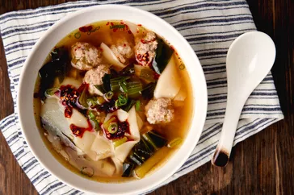

Lazy Wonton Soup

Description
For this lazy wonton soup, you skip making filled wontons,
and drop pork meatballs and quartered wonton wrappers right into the gingery,
flavorful broth. This recipe is SO delicious!
Personally, before stumbling upon this recipe, I had never tried
chinese cuisine before so it certainly was a new experience.
Ingredients
- 2 quarts chicken stock or broth
- 1 bunch green onions
- 1 garlic clove
- 1 piece fresh ginger
- 2 tablespoon soy sauce
- 1 1/2 teaspoons rice vinegar
- 1 tablesoon brown sugar
- 1 teaspoon kosher salt, divided
- 1 pound ground pork
- 2 teaspoons toasted sesame oil
- 2 teaspoons cornstarch
- 3 heads baby bok choy, rougly chopped
- 20 wonton wrappers, cut into quarters
- Sriracha hot sauce or chili crunch (optional)
Steps
- Prepare the broth base
- Create the meatballs
- Cook the meatballs and assemble
- Garnish and serve